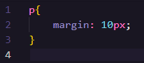
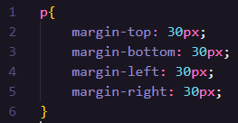
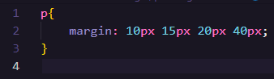

A primeira maneira, é adicionando um tamanho padrão para todos os lados, como mostrado a baixo:
A segunda maneira, é definindo o margin junto aos atributos Top, Botton, Left e Right, como ilustrado na imagem a baixo:
A terceira maneira de utilizar o Margin utiliza um pouco dos dois métodos apresentados a cima. essa maneira consiste em informar os valores um a um. imagine que o primeiro valor corresponde ao topo, e os demis serão definidos em sentido horário, como mostrado na imagem a seguir:
Dessa maneira, o primeiro valor determina o topo, o segundo valor determina o lado direito, o terceiro valor determina a parte de baixo, e o último valor determina o lado esquerdo.